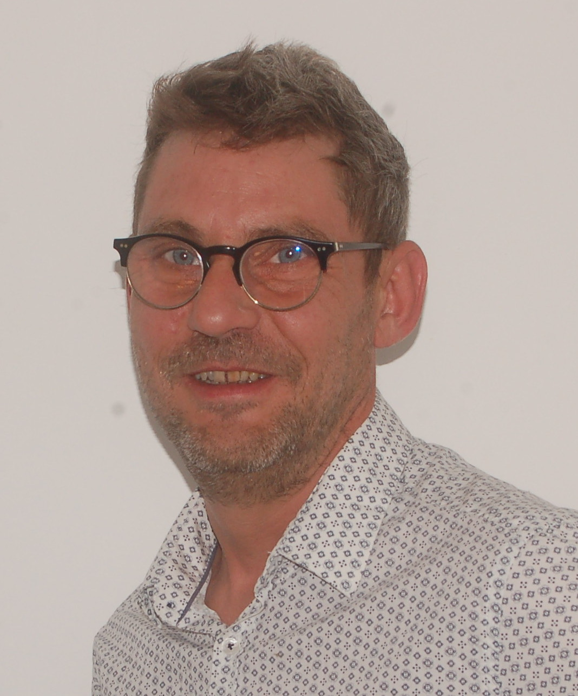
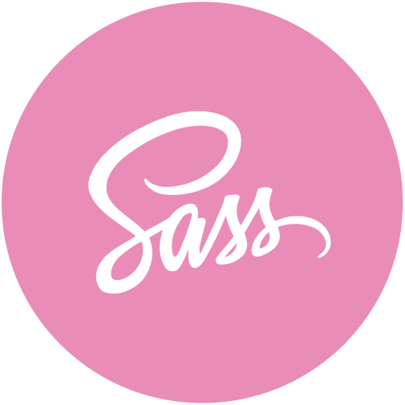

Contact
- 06 08 71 25 42
- baptiste.wentzler@wanadoo.fr
- 74420 Habère-Lullin
Languages Info


- 


À propos de moi
Féru d'informatique depuis mon premier Commodore 64 en 1992, montage PC (de l'intel 286 au core I3). Intéressé par l'assembleur (décompilation de programmes), python (réalisation d'un script client pour la récupération des variables d'un simulateur de vol) en passant par l'arduino (télécommande IR pour appareils photos Nikon) et depuis peu HTML/CSS et JS (lampe LED commandé par wifi). Tous mes projets sont disponibles sur mon Github.
Compétences
- Linux, logiciels libres
- Git, github
Soft skills
- Fiable, curieux
- Inventif
- Volontaire
- Travail en équipe, autonome
Langue
- AnglaisProfessionnel